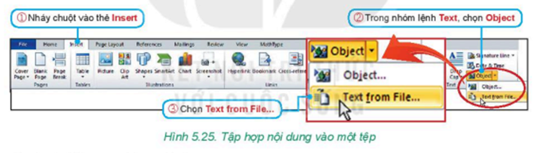
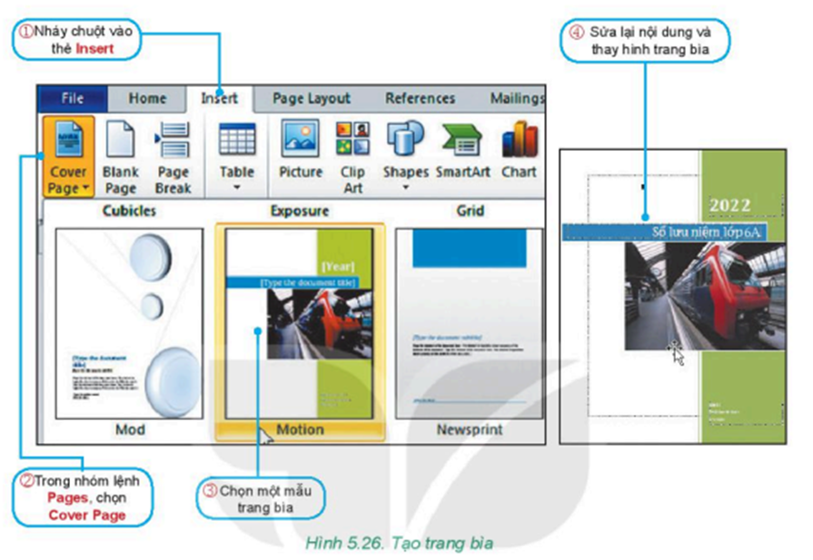
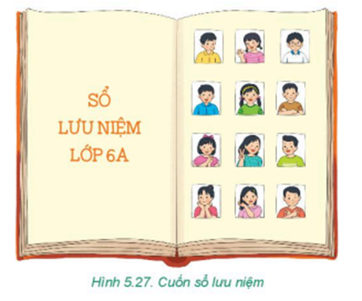

Từ các kết quả thực hành trong chủ đề này, các nhóm )từ 3 – 5 em hãy tập hợp và bổ sung thêm nội dung để hoàn thiện cuốn sổ lưu niệm của lớp.
- Trong các bài học trước, các em đã tạo các tệp văn bản chứa nội dung cuốn sổ lưu niệm của lớp như: bài viết cảm nghĩ, danh sách thành viên,... Các em hãy tập hợp các nội dung đó vào một tệp văn bản có tên Soluuniem.docx.
- Xem lại sơ đồ tư duy trình bày nội dung cuốn sổ lưu niệm các em đã tạo ở Bài 10 để rà soát lại nội dung xem đã đầy đủ chưa. Phân công các bạn trong nhóm thu thập thông tin, hình ảnh để bổ sung, đặc biệt là thông tin về các thầy cô giáo, các hoạt động mà lớp đã thực hiện như: hoạt động thể thao, văn hoá, văn nghệ, tham quan,...
- Soạn thảo các nội dung bổ sung. Chú ý thực hiện các thao tác định dạng để văn bản được trình bày cô đọng với bố cục hợp lí và đẹp mắt:
Để tạo trang bìa cho cuốn sổ lưu niệm, em thực hiện theo các bước sau:
Hãy tưởng tượng các em đã là người lớn. Cả lớp gặp lại nhau trong một lần họp lớp ở tương lai 50 năm sau. Hãy cùng xem lại cuốn sổ lưu niệm và nghĩ về câu hỏi “Tại sao chúng ta lại đưa nội dung này vào SỔ?”. Các nhóm hãy chia sẻ với cả lớp sản phẩm của mình và cả lớp cùng thảo luận để cuốn sổ lưu niệm chung của cả lớp có nội dung đầy đủ và trình bày đẹp nhất.
